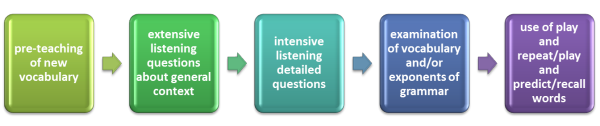
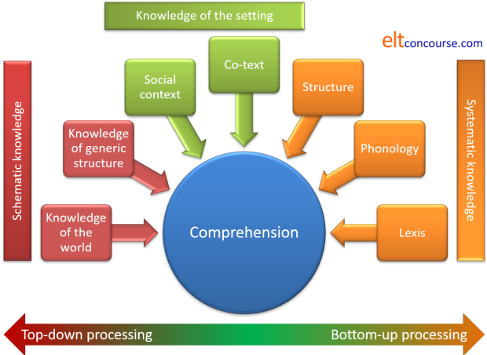

Understanding listening
There is a saying that for many people the opposite of speaking isn't listening, it's waiting. However, for the purposes of this guide we shall be considering listening as one of the four essential language skills our students need to acquire.
You acquired your first language(s) by listening. The ability to hear and understand is fundamental to the ability to communicate and learn in a foreign language, too.
Some of what follows will be easier to understand if you have followed the guide to reading.
 |
A little history |
Traditionally, listening has been used in the language classroom as a
vehicle for other kinds of learning and teaching. A listening text
can be used this way to introduce new items of vocabulary or to focus on
a particular structure. If it is used this way a lesson involving
a listening text would normally follow a predictable pattern.
(Note, by the way, the use of the term 'text' here. Texts are not
only written.)
Like
this:

(Adapted from Field 1998:110)
Starting from the left:
- The teacher checks the text carefully to identify words the
learners would be unlikely to know and without which they will not
understand the text sufficiently. In the trade, these are
known as potential blocking items.
These words are then introduced and practised before the listening part of the lesson begins. At this point, too, the scene is usually set: e.g.,
You are going to listen to a telephone conversation between a man and a woman. - After or, better, before first listening to the whole piece, learners are
set
'gist' questions to see if they have a global understanding of the
text:
What's it about? How many people are speaking?
Where are they?
etc. - Then comes the listening proper and at this stage the text is
usually interrupted to allow the learners time to note answers to a
set of questions designed to test their detailed understanding such
as:
Who does the caller want to talk to?
Is that person at home?
What does the man offer to do?
How does the woman respond?
etc. These sorts of questions might also focus on the attitudes of the speakers, e.g.,
Is the man happy or disappointed? - When that phase is satisfactorily completed, attention turns to the language content of the text to focus on things like new lexis, intonation patterns, politeness strategies, question intonation and so on. Any language item at all can be introduced this way.
- Finally, the listening text is revisited to ensure full understanding and recall.
It is not being argued here that using a listening text in this way is somehow 'wrong' or misguided. However, it has long been realised that such procedures do not teach people how to become better listeners in a foreign language, they test how good they already are.
Types of text. What do we listen to? |
Here's a list of possible text types that anyone might listen to in a day or so.
| a radio news programme | a TV soap opera | an anecdote |
| a train announcement | the lyrics of a song | a set of instructions at work |
| a waiter explaining the menu | an answering service message | a lecture |
Now think about how we listen to these things. Do we, for example
- Try to hear and understand every word?
- Concentrate hard or does our mind wander a little?
- Have the opportunity to interrupt the speaker for clarification or repetition?
- Switch off at times and monitor what we are hearing for something that interests us?
When you have an answer, click for some comments.
- When we are dealing with some listening texts, for example, a travel announcement, a set of instructions or a waiter explaining what's in a dish, it's important that we understand nearly everything. If we miss something important we may get the wrong meal or the wrong platform.
- Some settings allow us to interrupt and ask for clarification or repetition, e.g., the work instructions or the waiter's explanation. Some don't so we have to be even more careful.
- With other texts, we can be a bit more careless. Typically, in a news programme, people will listen quite casually until a key word or two alerts them to an item of interest. Then they switch listening mode and apply more attention. Travel announcements are often dealt with this way. If we recognise that the announcement does not concern our journey, we just switch off until the next one comes along.
- Other texts require different approaches. A TV soap opera or an anecdote might require our full attention but as long as we get the gist of what's going on, it isn't usually necessary (or possible) to catch every word and every nuance. Typically, an anecdote is told face-to-face or over the phone so in this case we also need occasionally to show interest and comprehension. We do that through what's called back channelling (grunts, exclamations, nods etc.) There's more on that in the guide to speaking, linked below.
- Finally, some texts require our full attention, even to the
point of making notes to help us recall important information.
Here, we need particularly to pay attention to the speaker's
signals. For example, something beginning
Here's the key point: ...
is likely to be important but something beginning
By the way, ...
can probably be safely ignored. - Finally, some texts we don't even bother to listen to. We may already know the lyrics of a song and we mostly know what an answering service message is going to say so we switch off and wait to hear the beep. Here, the opposite of speaking really is waiting.
It's clear, then, that we deploy different skills depending on:
- the sorts of text we are hearing
- our reasons for listening
 |
Types of listening. How do we listen? |
- Listening for information
- This comes in three modes:
First, we can be listening to try to understand as much of the text as we can. This will apply to a lecture or the waiter's explanation, for example.
Second, we may be listening for key words to trigger more intensive concentration. This occurs when we listen to a string of announcements waiting for our flight or destination to be mentioned.
Third, we may be listening in a monitoring mode, getting the gist of what we hear only, e.g., this news item is about sport, this one's about an accident etc. We may do this until we hear something that catches our attention and then we switch to a more intensive mode. - Listening for discourse clues
- This kind of listening involves paying conscious attention to what is being signalled by the speaker. There are examples above about how this might happen in a lecture but it will also happen in other kinds of texts. Anecdotes, for example, are littered with time expressions to guide the hearer through the sequence of events and may be punctuated by appeals for response of confirmation such as Don't you see? or You'll never guess who it was ... . Listening out for such things makes the task of listening and understanding easier.
- Intensive listening
- In this mode we need to deploy our knowledge of the meaning and pronunciation of the lexis as well as the way in which structures such as tenses and their aspects inform us of the relationship between events and things.
It isn't easy and it's made more complex by the need to switch between listening modes when, for example, a key word triggers the anticipation that something important or interesting will follow.
Bottom-up and top-down processing |
You will encounter these terms both in the discussion of listening and reading because they are applicable to both.
- Bottom-up processing
- involves the learners using knowledge of the meaning and pronunciation of words, knowledge of the grammar of the language and how texts fit together to understand the meaning of what they hear.
- Top-down processing
- involves learners using their knowledge of the world and the type of thing they are listening to (its usual organisation and the topics) to fill in gaps with intelligent guesswork and prediction.
To help you understand, think about this list of strategies that
learners may use to understand what they hear and ask yourself if they
are depending on their language knowledge or on other sorts of knowledge
(bottom-up or top-down).
Click here when you have a few notes.
| 1 | I know these two characters in the film are enemies so I'm listening to see what the argument is about. | 2 | I'm listening for the word 'Malaga' because that's where I'm going. | 3 | I know how this person's tall stories usually end so I'm listening to see if I'm right. |
| 4 | This is obviously an important new instruction so I want to understand everything. I'll interrupt when something's not clear. | 5 | I like this song and I know it's about a lost love so I'm listening for words that will tell me how the singer feels. | 6 | I'm waiting for a TV news story about the American Presidential election so when I hear 'Democrat' or 'Republican' or see a US flag I can start listening properly. |
| 7 | I'm waiting till nearly the end of the news report because that's where the sports news always comes. | 8 | Ah! He just said 'That's the first of the three obvious problems' so I've written '2' in my notebook and I'll try to understand where and when the next two come. | 9 | This is a picture of a hospital so I'll listen out for words I know connected to hospitals and health to understand the story. |
It is certainly not a simple either-or distinction. Most of these strategies contain elements of both top-down and bottom-up processing. In fact, of course, that's what good listeners do – apply a combination of strategies to match the task. Here are some notes:
- The learner is applying top-down knowledge of the plot and characters in a story so can safely predict that she/he need only listen for the topic of a quarrel, not its existence. Then the learner applies bottom-up processing to understand what the characters are talking about. Knowledge of the plot will limit the possibilities, too, and make guessing meaning easier.
- In this case, the learner is deploying knowledge of how announcements are organised (top-down) and then using a bottom-up strategy to identify the word 'Malaga' and the flight number / time / gate number etc. that he/she knows will follow it.
- The listener is using a top-down strategy reliant on knowing the structure of anecdotes (they follow a familiar pattern) and is waiting for what's known as the coda (the final bit where tellers of stories usually state their own feelings). That's the bit we need to respond to; the rest can pass us by.
- This is mostly a bottom-up process. The listener is working hard to understand every word if possible but will also be using other skills to listen for names and departments, times and deadlines etc. The use of strategies such as asking for repetition / clarification is also a skill worth having, of course, especially in situations like this.
- The listener is hardly listening to most of the song and may just be monitoring for adjectives to describe feelings. That's a bottom-up strategy concerned with recognising word class. There's more on how we do this in the guide to reading skills.
- This is bottom-up monitoring for particular words or expressions. Top-down knowledge is telling the listener to look out for images (flags, building etc.) to help the process.
- The listener has used what's known as generic knowledge (part of top-down processing) to be aware that sports reports come at the end of news reports, usually. If it's a TV programme, the listener may also be looking out for sporting images.
- Listening to a lecture and monitoring for particular signals is a bottom-up process and the sorts of things to listen for can be taught.
- The listener is using top-down processing to deploy his/her knowledge of the world of health services so is already alert to what sorts of lexis to expect (doctor, patient, ward, ambulance, treat, care for etc.) which will ease the strain of bottom-up processing of the text.
There is a clear implication here:
We need to make sure that we use a range of texts and
procedures to ensure that our students get adequate practice in all the
listening skills.
The knowledge |
From here on the discussion of listening skills becomes slightly more technical. If you are reading this guide because you are taking or have just taken an initial training programme, you probably do not need much more than we have already covered. However, if you are going on to further training or are simply interested in learning more, read on.
Before going on to thinking about how to teach listening skills,
it is worth pausing to consider what knowledge learners need to
bring to the process of understanding what they hear. In other
words, we need to look for some kind of syllabus for listening
skills which goes a little beyond simple descriptions of top-down
and bottom-up processing, important though they probably are.
Listening is not a passive process.
Here's a diagram with some notes. The diagram is divided by
colour into three parts.
Think a little about the meanings and implications for teaching in each of the areas on the diagram and then read on for some notes.

- Schematic knowledge is sometimes referred to as part of
top-down knowledge although that is an inaccurate or at best a
partial way to understand the area.
- Knowledge of generic structure involves a number of
issues which are covered in more detail in the guides to
genre (linked below). Briefly, however, we need to
consider:
- Text staging:
Genres have culturally conventional stages for information to occur. For example, a narrative (such as an anecdote) will begin with orientation which will provide information about the who, the when and the where of the story. The second stage will usually involve the identification of a complication or problem, the third stage will relate how the problem is solved or what resolution is found to the complication and the final stage (the coda) will usually concern the speaker's personal response to the story.
A procedural text, for example, will have a very different structure because it is designed for a different cultural purpose (to explain how something is done) and this will usually start with the goal of the process (why you are doing it) and then go on to tell you about the materials and resources you will need before setting out, step-by-step, how the process is managed.
Knowing how these sorts of texts, whether written or spoken, are structured in terms of where the information comes is very helpful to listeners because they will be alert to listen for each stage separately rather than being faced with a mass of data. - Elements of the language:
All genres will use language elements of different sorts to help them fulfil their purposes.
Taking our first example again, a narrative will contain circumstances of time and location (last year, in the morning, the next day, at the hotel, in the water, out to sea etc.) and a good deal of subordination when revealing the problems and issues (although, then, when, because, however etc.). The resolutions of the problems will usually contain linking devices (called conjuncts) such as in the end, the upshot was, finally etc. The text will normally revolve around what are called behavioural or material process verbs such as do, go, become, collapse, sink, swim and so on. The personal response will usually be couched in terms of emotional reaction (relieved, disappointed, delighted etc.) and will use first-person verb forms.
If the listener is primed to focus on circumstances and verbs of this sort, comprehending a text becomes a good deal easier.
- Text staging:
- Knowledge of the world goes beyond the text. We
rarely come to a text knowing nothing of its content or
topic in advance. If we know, for example, that
someone wants to explain how to do something, we will
already have activated what we know of the topic before we
hear a word spoken. Equally, if what someone says in
response to a question such as:
Do you have a large family?
we will be alert to the sorts of information we are likely to hear (relationships, types of people, personalities and so on).
Visual clues are important, too, especially if we are trying to understand a television programme or a presentation of some sort.
If the learners' knowledge of the world concerning the topic of the text is activated early on in the process, it becomes a good deal easier for people to understand what they hear.
- Knowledge of generic structure involves a number of
issues which are covered in more detail in the guides to
genre (linked below). Briefly, however, we need to
consider:
- Knowledge of the setting also comes in two distinct parts,
one requiring top-down processing and one requiring more formal
bottom-up knowledge.
- The social context is critical, of course because our knowledge of it allows us to predict the purposes for which someone is speaking. The assumption we all start from is that people speak to communicate something and knowing the speakers' intentions in a situation helps very considerably with understanding what they say. Encounters with strangers, for example, will usually be concerned with some kind of transactional functions such as getting information or directions, obtaining goods and services and so on. We need not trouble ourselves with language used for maintaining social relationships because we only need to figure out what it is that the speaker wants. The social setting will very often give us that information before a word is spoken.
- In addition to contextual clues, more sophisticated
listeners also rely on co-text data. For example,
knowing that Can you tell me will preface a request
for information, and I wonder if you could will
preface a request for action is very helpful when faced with
an unexpected encounter with a stranger.
Knowing, too, about discourse features and being alerted to their importance is also helpful. Here, the functions of conjunctions, pronoun referencing and so on will play a part. For example, when listening to an anecdote (see above) it is helpful to be aware of the need to keep track of people by focusing on pronoun references and to follow cause and effect connections through being alert to the use of and then, because, so, this led to etc.
- Finally, we come to the purely bottom-up processing skills
on the right of the diagram and these all focus on understanding
the formal nature of the language.
- Structural knowledge is important because, for example,
it allows us to set events in time by focusing on tense and
aspect, to see how people's responses vary through the
modality they use and to understand that a word followed by
which was is likely to be a noun or a whole
statement but one followed by who was is almost
certainly a person or function.
This structural knowledge is often underestimated by those who feel that top-down processing is the new normal. - Phonological features do not just concern the
pronunciation (and hence recognition) of words.
Learners need to be trained to appreciate how connected
speech patterns alter the sounds they might expect to hear
(see the link below for more).
It also concerns recognising the speaker's emotional state of communicative intention by recognising how intonation may signal these things in English. - Lexis or semantic knowledge is, naturally, vital for listening comprehension. Some unknown words my be safely ignored (especially if, for example, a word is identifiable by its co-text as an adjective or adverb) but too many unknown items will effectively block comprehension. Hence the need to train listeners in the art of ignoring some words and inferring the meanings of others from co-text.
- Structural knowledge is important because, for example,
it allows us to set events in time by focusing on tense and
aspect, to see how people's responses vary through the
modality they use and to understand that a word followed by
which was is likely to be a noun or a whole
statement but one followed by who was is almost
certainly a person or function.
That's quite a lot, isn't it, so listening skills cannot be approached in a haphazard manner. All these areas of knowledge need to be in place and they all need to work together to make listening comprehension function at all.
| Related guides | |
| teaching language skills | this is an overview of what you and your learners need to know when developing or practising skills |
| teaching listening | for the essentials-only guide to how we can go about developing our learners' listening skills |
| speaking | for the guide to a skill usually (not always) combined with listening |
| genre | this is the in-service guide to genre which covers the most important aspects of identifying the characteristics of a range of genres |
| verbal processes | for a guide which considers what kinds of verbs are associated with certain text types |
| connected speech | this is an in-service guide to the most important characteristics of how sounds may be altered when English is spoken at normal speed |
| pages for learners | click through to some listening exercises. You can incorporate the materials into your own lessons |
| inferencing | for some help with how we figure meaning from context and co-text |
| assessing listening | for the in-service guide to how we may evaluate and measure our learners' listening abilities |
| teaching vocabulary | for the in-service guide to teaching meaning |
| context | for a guide to the essentials of context and co-text |
Take a short test on all this to remind
you of the most important ideas and when you are happy that you have understood this page, click
above to
go
on to some teaching ideas.
Alternatively, you may like to work through
the guide to
assessing listening skills.
Reference:
Field, J, 1998, Skills and strategies: towards a new methodology for
listening, ELT Journal Volume 52/2 April 1998 Oxford: Oxford University
Press
Other references you may find helpful:
Anderson, A & Lynch, T, 1988, Listening, Oxford: Oxford University
Press
Brown, G, 1990, Listening to Spoken English, Harlow: Longman
Buck, G, 2001, Assessing Listening, Cambridge: Cambridge
University Press
Field, J, 2009, Listening in the Language Classroom, Cambridge:
Cambridge University Press
Lynch, T, 2009, Teaching Second Language Listening, Oxford: Oxford
University Press
Rost, M, 1990, Listening in Language Learning, Harlow: Longman
Rost, M, 2002, Teaching and Researching Listening, Pearson
Underwood, M, 1989, Teaching Listening, Harlow: Longman
Ur, P, 1984, Teaching Listening Comprehension, Cambridge: Cambridge
University Press
White, G, 1998, Listening, Oxford: Oxford University Press
Wilson, JJ. & Wilson, JJ, 2008, How to Teach Listening (1st Ed.),
Harlow: Pearson Longman